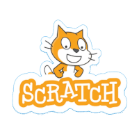

TurboWarp es un software de desarrollo educativo basado en Scratch, con la diferencia de que a trávez de plugins puede comunicarse con un Joystick. En el colegio 713 Juan Abdala Chayep de Esquel-Chubut se desarrollaron varios juegos interactivos, y ademas se utilizaron controles Arcades desarrollados por el profesor de la materia Entornos Multimediales. La lógica de dichos controles se desarrolló utilizando plaquetas "UNO".

